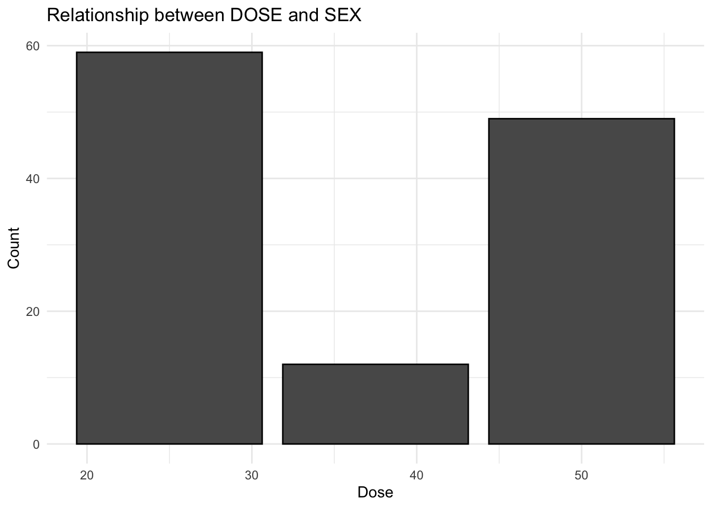
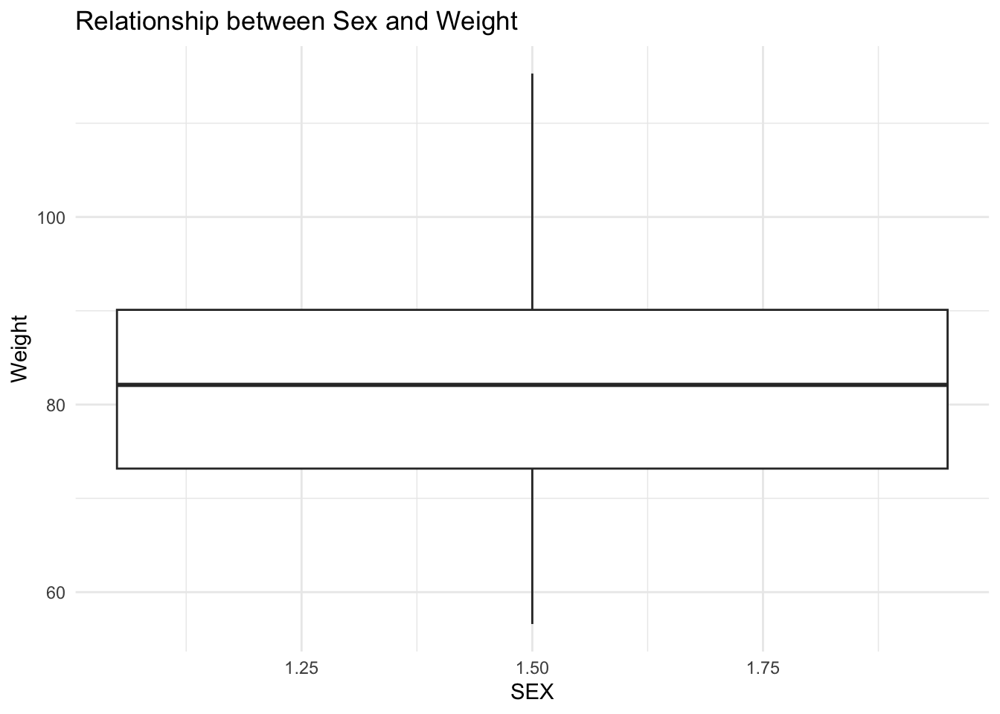

library(tidymodels)
library(tidyverse)
library(ggplot2)
library(yardstick)
library(pROC)Fitting Exercise
Loading necessary packages
Importing the Mavoglurant dataset from this GitHub repository
mavoglurant <- read.csv("~/Desktop/BIOS8060E/emmahardinparker-MADA-portfolio/fitting-exercise/Mavoglurant_A2121_nmpk.csv")EDA of the Mavoglurant data set
# Summary table of the data prior to any mutation or cleaning
print(summary(mavoglurant)) ID CMT EVID EVI2
Min. :793.0 Min. :1.000 Min. :0.00000 Min. :0.0000
1st Qu.:832.0 1st Qu.:2.000 1st Qu.:0.00000 1st Qu.:0.0000
Median :860.0 Median :2.000 Median :0.00000 Median :0.0000
Mean :858.8 Mean :1.926 Mean :0.07394 Mean :0.1613
3rd Qu.:888.0 3rd Qu.:2.000 3rd Qu.:0.00000 3rd Qu.:0.0000
Max. :915.0 Max. :2.000 Max. :1.00000 Max. :4.0000
MDV DV LNDV AMT
Min. :0.00000 Min. : 0.00 Min. :0.000 Min. : 0.000
1st Qu.:0.00000 1st Qu.: 23.52 1st Qu.:3.158 1st Qu.: 0.000
Median :0.00000 Median : 74.20 Median :4.306 Median : 0.000
Mean :0.09373 Mean : 179.93 Mean :4.085 Mean : 2.763
3rd Qu.:0.00000 3rd Qu.: 283.00 3rd Qu.:5.645 3rd Qu.: 0.000
Max. :1.00000 Max. :1730.00 Max. :7.456 Max. :50.000
TIME DOSE OCC RATE
Min. : 0.000 Min. :25.00 Min. :1.000 Min. : 0.00
1st Qu.: 0.583 1st Qu.:25.00 1st Qu.:1.000 1st Qu.: 0.00
Median : 2.250 Median :37.50 Median :1.000 Median : 0.00
Mean : 5.851 Mean :37.37 Mean :1.378 Mean : 16.55
3rd Qu.: 6.363 3rd Qu.:50.00 3rd Qu.:2.000 3rd Qu.: 0.00
Max. :48.217 Max. :50.00 Max. :2.000 Max. :300.00
AGE SEX RACE WT
Min. :18.0 Min. :1.000 Min. : 1.000 Min. : 56.60
1st Qu.:26.0 1st Qu.:1.000 1st Qu.: 1.000 1st Qu.: 73.30
Median :31.0 Median :1.000 Median : 1.000 Median : 82.60
Mean :32.9 Mean :1.128 Mean : 7.415 Mean : 83.16
3rd Qu.:40.0 3rd Qu.:1.000 3rd Qu.: 2.000 3rd Qu.: 90.60
Max. :50.0 Max. :2.000 Max. :88.000 Max. :115.30
HT
Min. :1.520
1st Qu.:1.710
Median :1.780
Mean :1.762
3rd Qu.:1.820
Max. :1.930 Plotting the outcome variable (DV) as a function of time, stratified by DOSE, and grouped by ID
# Plot DV vs. time, stratified by DOSE and grouped by ID
dv_dose <- ggplot(mavoglurant, aes(x = TIME, y = DV, group = ID, color = DOSE)) +
geom_line() +
geom_point() +
labs(x = "Time", y = "Outcome Variable (DV)", color = "Dose") +
ggtitle("Outcome Variable vs. Time Stratified by Dose") +
theme_minimal()
print(dv_dose)Filtering the data set to only include OCC = 1 observations
strat_mavo <- mavoglurant %>%
filter(OCC == "1")Filtering the data set to only include non zero values for TIME, computing the sum of DV and assigning it to variable Y,
# Exclude observations with TIME = 0
filtered_mavo <- strat_mavo %>%
filter(TIME != 0)
# Compute the sum of DV variable for each individual
summarized_mavo <- filtered_mavo %>%
group_by(ID) %>%
summarize(Y = sum(DV))
# Create a data frame with observations where TIME == 0
time_zero_data <- strat_mavo %>%
filter(TIME == 0)
# Join the summarized data with the data at time zero
joined_mavo <- left_join(summarized_mavo, time_zero_data, by = "ID")
# Print the dimensions of the combined data frame
dim(joined_mavo)[1] 120 18Converting RACE and SEX variables to factor variables and only including necessary columns as well as printing a summary table of the joined data set.
# Convert RACE and SEX to factor variables
joined_mavo <- joined_mavo %>%
mutate(RACE = factor(RACE),
SEX = factor(SEX))
# Keep only the desired variables
joined_mavo <- joined_mavo %>%
select(Y, DOSE, AGE, SEX, RACE, WT, HT)
# View the first few rows of the joined data set
head(joined_mavo)# A tibble: 6 × 7
Y DOSE AGE SEX RACE WT HT
<dbl> <dbl> <int> <fct> <fct> <dbl> <dbl>
1 2691. 25 42 1 2 94.3 1.77
2 2639. 25 24 1 2 80.4 1.76
3 2150. 25 31 1 1 71.8 1.81
4 1789. 25 46 2 1 77.4 1.65
5 3126. 25 41 2 2 64.3 1.56
6 2337. 25 27 1 2 74.1 1.83# Summary Table of joined_mavo
print(summary(joined_mavo)) Y DOSE AGE SEX RACE
Min. : 826.4 Min. :25.00 Min. :18.00 1:104 1 :74
1st Qu.:1700.5 1st Qu.:25.00 1st Qu.:26.00 2: 16 2 :36
Median :2349.1 Median :37.50 Median :31.00 7 : 2
Mean :2445.4 Mean :36.46 Mean :33.00 88: 8
3rd Qu.:3050.2 3rd Qu.:50.00 3rd Qu.:40.25
Max. :5606.6 Max. :50.00 Max. :50.00
WT HT
Min. : 56.60 Min. :1.520
1st Qu.: 73.17 1st Qu.:1.700
Median : 82.10 Median :1.770
Mean : 82.55 Mean :1.759
3rd Qu.: 90.10 3rd Qu.:1.813
Max. :115.30 Max. :1.930 Now it’s time to create some figures and tables to explore the new joined data set, joined_mavo. Since a codebook was not provided, I am going to create some plots to try to assume which values of SEX (1 or 2) correlate with Male and Female.
# Relationship between SEX and DOSE
sex_dose <- ggplot(joined_mavo, aes(x = DOSE, fill = SEX)) +
geom_bar(position = "dodge", color = "black") +
labs(x = "Dose", y = "Count", fill = "SEX") +
ggtitle("Relationship between DOSE and SEX") +
scale_fill_manual(values = c("1" = "lightblue", "2" = "lightgreen")) +
theme_minimal()
print(sex_dose)
#Relationship between SEX and WT (weight)
sex_wt <- ggplot(joined_mavo, aes(x = SEX, y = WT, fill = SEX)) +
geom_boxplot() +
labs(x = "SEX", y = "Weight", fill = "SEX") +
ggtitle("Relationship between Sex and Weight") +
scale_fill_manual(values = c("1" = "lightblue", "2" = "lightgreen")) +
theme_minimal()
print(sex_wt)
As we can see from the plot exploring the relationship between sex and dose, the sex assigned the value 1 had much higher doses on average than the sex assigned the value 2. When exploring the relationship between sex and weight, we can see that sex assigned the value 1 weighs considerably more on average than the sex assigned value 2. From these plots I can comfortably assume that SEX = 1 corresponds to Male and SEX = 2 corresponds to female.
Creating plots to determine a relationship between AGE and Y.
y_age <- ggplot(joined_mavo, aes(x = AGE, y = Y)) +
geom_point() +
labs(x = "Age", y = "Y") +
ggtitle("Relationship between Y and Age") +
theme_minimal()
print(y_age)
From this plot we can see no discernible relationship between the outcome variable Y and Age.
Now we are going to move onto model fitting. Please note that I had trouble using the rmse() function due to strange errors so I had to rework the coding process to calculate the RMSE and R-squared values. I also elected to use the pROC package to help me compute ROC-AUC values for the logistic models.
Fitting a linear model to the continuous outcome (Y) using the main predictor of interest, DOSE.
# Fit a linear model
y_dose_model <- lm(Y ~ DOSE, data = joined_mavo)
# Summarize the model
tidy(y_dose_model)# A tibble: 2 × 5
term estimate std.error statistic p.value
<chr> <dbl> <dbl> <dbl> <dbl>
1 (Intercept) 323. 199. 1.62 1.07e- 1
2 DOSE 58.2 5.19 11.2 2.69e-20Fitting a linear model to Y using all predictors
# Fit a linear model using all predictors
y_all_model <- lm(Y ~ ., data = joined_mavo)
# Summarize the model
tidy(y_all_model)# A tibble: 9 × 5
term estimate std.error statistic p.value
<chr> <dbl> <dbl> <dbl> <dbl>
1 (Intercept) 3387. 1835. 1.85 6.76e- 2
2 DOSE 59.9 4.88 12.3 2.05e-22
3 AGE 3.16 7.82 0.403 6.88e- 1
4 SEX2 -358. 217. -1.65 1.02e- 1
5 RACE2 155. 129. 1.21 2.31e- 1
6 RACE7 -405. 448. -0.904 3.68e- 1
7 RACE88 -53.5 245. -0.219 8.27e- 1
8 WT -23.0 6.40 -3.60 4.71e- 4
9 HT -748. 1104. -0.678 4.99e- 1Calculating RMSE and R-Squared values for both models, y_dose_model & y_all_model.
### y_dose_model calculations
#Calculating predictions for y_dose_model
preds_dose <- predict(y_dose_model, newdata = joined_mavo)
#Creating dataframe of original values of Y and predictions
preds_dose_data <- bind_cols(preds_dose, joined_mavo$Y) %>%
rename(Y = "...2")New names:
• `` -> `...1`
• `` -> `...2`## Compute RMSE for y_dose_model
# Calculate residuals
residuals <- preds_dose - joined_mavo$Y
# Compute RMSE
rmse <- sqrt(mean(residuals^2))
# Compute R-squared
r_squared <- 1 - sum(residuals^2) / sum((joined_mavo$Y - mean(joined_mavo$Y))^2)
# Print RMSE and R-squared
cat("RMSE:", rmse, "\n")RMSE: 666.4618 cat("R-squared:", r_squared, "\n")R-squared: 0.5156446 The RMSE value of 666 could indicate large amounts of error or poor model performance. The R-squared value of 0.51 (~51%) could also indicate poorer model performance as we would like to maximize R-squared.
### y_all_model calculations
#Calculating predictions for y_all_model
preds_all <- predict(y_all_model, newdata = joined_mavo)
#Creating dataframe of original values of Y and predictions
preds_all_data <- bind_cols(preds_all, joined_mavo$Y) %>%
rename(Y = "...2")New names:
• `` -> `...1`
• `` -> `...2`## Compute RMSE for y_dose_model
# Calculate residuals
residuals2 <- preds_all - joined_mavo$Y
# Compute RMSE
rmse2 <- sqrt(mean(residuals2^2))
# Compute R-squared
r_squared2 <- 1 - sum(residuals2^2) / sum((joined_mavo$Y - mean(joined_mavo$Y))^2)
# Print RMSE and R-squared
cat("RMSE:", rmse2, "\n")RMSE: 590.8535 cat("R-squared:", r_squared2, "\n")R-squared: 0.6193084 This model performed better than the previous model. Our RMSE is lower (590) and our R-squared is higher at 0.619 (~62%).
Now we are going to move on to logistic models for the binary outcome (SEX) using DOSE as the main predictor of interest.
#Fit a logistic model to SEX using the main predictor of interest,DOSE.
logit_sex_model <- glm(SEX ~ DOSE, data = joined_mavo, family = binomial)
# Summarize the model
tidy(logit_sex_model)# A tibble: 2 × 5
term estimate std.error statistic p.value
<chr> <dbl> <dbl> <dbl> <dbl>
1 (Intercept) -0.765 0.854 -0.896 0.370
2 DOSE -0.0318 0.0243 -1.31 0.192Now I am going to fit a logistic model to sex using all predictors
# Fit logistic model with all predictors
logit_model_all <- glm(SEX ~ ., data = joined_mavo, family = binomial)
# Summarize the model
tidy(logit_model_all)# A tibble: 9 × 5
term estimate std.error statistic p.value
<chr> <dbl> <dbl> <dbl> <dbl>
1 (Intercept) 60.3 18.0 3.34 0.000824
2 Y -0.00104 0.000963 -1.08 0.280
3 DOSE -0.0308 0.0776 -0.396 0.692
4 AGE 0.0834 0.0607 1.37 0.170
5 RACE2 -1.93 1.37 -1.40 0.161
6 RACE7 0.118 3.85 0.0306 0.976
7 RACE88 -1.50 2.19 -0.683 0.494
8 WT -0.0628 0.0794 -0.791 0.429
9 HT -33.2 11.1 -3.00 0.00274 Computing ROC-AUC and accuracy for logit_sex_model
##ACCURACY
# Predict SEX using the logistic model with only DOSE as a predictor
predsdose <- predict(logit_sex_model, type = "response")
# Convert predicted probabilities to binary predictions (0 or 1)
preds_dose_binary <- ifelse(predsdose > 0.5, 1, 0)
# Compute accuracy
accuracy <- mean(preds_dose_binary == joined_mavo$SEX)
# Print accuracy
cat("Accuracy:", accuracy, "\n")Accuracy: 0 ##ROC-AUC
# Compute ROC-AUC for the logistic model with only DOSE as a predictor
roc_auc <- roc(joined_mavo$SEX, predict(logit_sex_model, type = "response"))Setting levels: control = 1, case = 2Setting direction: controls < cases# Calculate AUC
auc <- auc(roc_auc)
# Print ROC-AUC
cat("ROC-AUC for the logistic model with only DOSE as a predictor:", auc, "\n")ROC-AUC for the logistic model with only DOSE as a predictor: 0.5919471 An accuracy of 0 indicates that the model’s predictions did not match any of the observed values in the data. A ROC-AUC value of 0.59 is not particularly great as it could suggest that the model’s predictions are not far off from what could be considered random chance.
Computing ROC-AUC and accuracy for logit_model_all
##ACCURACY
# Predict SEX using the logistic model with all predictors
preds_sex <- predict(logit_model_all, type = "response")
# Convert predicted probabilities to binary predictions (0 or 1)
preds_binary_sex <- ifelse(preds_sex > 0.5, 1, 0)
# Compute accuracy
accuracy2 <- mean(preds_binary_sex == joined_mavo$SEX)
# Print accuracy
cat("Accuracy:", accuracy2, "\n")Accuracy: 0.025 ##ROC-AUC
# Compute ROC-AUC for the logistic model with only DOSE as a predictor
roc_auc2 <- roc(joined_mavo$SEX, predict(logit_model_all, type = "response"))Setting levels: control = 1, case = 2Setting direction: controls < cases# Calculate AUC
auc2 <- auc(roc_auc2)
# Print ROC-AUC
cat("ROC-AUC for the logistic model with only DOSE as a predictor:", auc2, "\n")ROC-AUC for the logistic model with only DOSE as a predictor: 0.9795673 An accuracy level of 0.025 suggests that the model is only “correct” in its predictions for 2.5% of observations. However, this model produced a very high and favorable ROC-AUC value of 0.9795 indicating a strong predictive performance in distinguishing between the two outcomes of the binary variable.